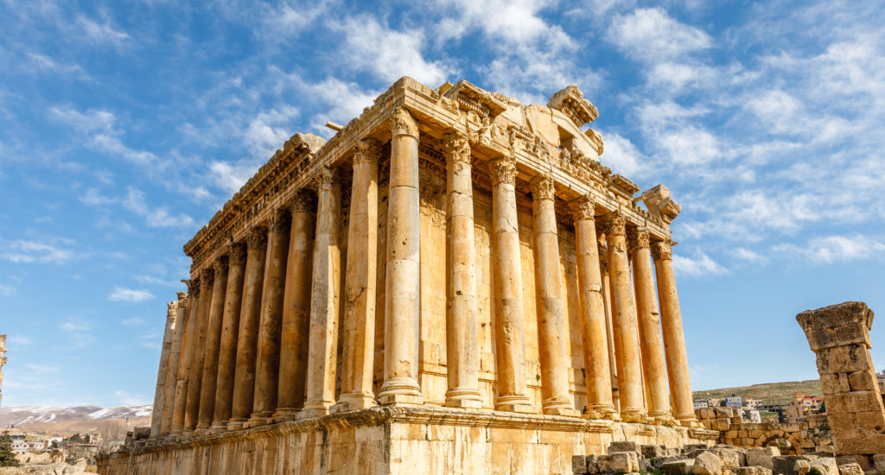

Journey Through Time: Discover Lebanon's Cultural Legacy From ancient Phoenician roots to Roman marvels and Ottoman elegance, explore the rich tapestry of Lebanese history through its most iconic landmarks.

Discover Lebanon's Cultural Gems
Anjar
An entire palace-city from the Umayyad dynasty today lies in ruins. It was a short-lived glory that now holds a large Armenian population.
FIND OUT MOREJeita Grotto
Fashioned by millions of years of erosion, the Jeita Grotto is a feast for the eyes, accessible by an underground river.
FIND OUT MOREThe Cedars
At more than 1,800 meters above sea level, the majestic cedars of Lebanon were highly valued in antiquity.
FIND OUT MORESidon
A vital commercial and administrative center, Sidon is known for its expert glass manufacturing and purple dye.
FIND OUT MORETyre
The Phoenician city known for its wealth and textile industry attracted ancient conquerors.
FIND OUT MORETripoli, St Gilles’ Fortress
Explore the touristic sites around the Crusader Castle and the historic souks of Tripoli.
FIND OUT MOREDeir el Qamar
Discover the old town filled with architectural prosperities of the 17th and 18th centuries.
FIND OUT MORE